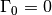

skrf.media.cpw.CPW¶
- class skrf.media.cpw.CPW(frequency, w, s, ep_r, t=None, rho=None, *args, **kwargs)¶
Coplanar waveguide class
This class was made from the technical documentation [1] provided by the qucs project [2] . The variables and properties of this class are coincident with their derivations.
[1] http://qucs.sourceforge.net/docs/technical.pdf [2] http://www.qucs.sourceforge.net/
Attributes
| K_ratio | intermediary parameter. see qucs docs on cpw lines. |
| alpha_conductor | Losses due to conductor resistivity |
| characteristic_impedance | Characterisitc impedance |
| ep_re | intermediary parameter. see qucs docs on cpw lines. |
| k1 | intermediary parameter. see qucs docs on cpw lines. |
| propagation_constant | Propagation constant |
| z0 | Port Impedance |
Methods
| Z0 | Characterisitc impedance |
| __init__ | Coplanar Waveguide initializer |
| capacitor | Capacitor |
| delay_load | Delayed load |
| delay_open | Delayed open transmission line |
| delay_short | Delayed Short |
| electrical_length | calculates the electrical length for a given distance, at |
| from_csv | create a Media from numerical values stored in a csv file. |
| gamma | Propagation constant .. |
| guess_length_of_delay_short | Guess physical length of a delay short. |
| impedance_mismatch | Two-port network for an impedance miss-match |
| inductor | Inductor |
| line | Matched transmission line of given length |
| load | Load of given reflection coefficient. |
| match | Perfect matched load (). |
| open | Open ( ) ) |
| resistor | Resistor |
| short | Short ( ) ) |
| shunt | Shunts a Network |
| shunt_capacitor | Shunted capacitor |
| shunt_delay_load | Shunted delayed load |
| shunt_delay_open | Shunted delayed open |
| shunt_delay_short | Shunted delayed short |
| shunt_inductor | Shunted inductor |
| splitter | Ideal, lossless n-way splitter. |
| tee | Ideal, lossless tee. |
| theta_2_d | Converts electrical length to physical distance. |
| thru | Matched transmission line of length 0. |
| white_gaussian_polar | Complex zero-mean gaussian white-noise network. |
| write_csv | write this media’s frequency, z0, and gamma to a csv file. |